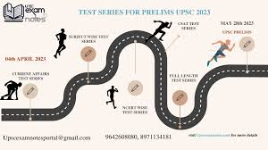
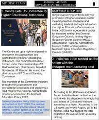

The current global landscape is marked by significant geopolitical tensions, economic uncertainty, and environmental crises. The ongoing Russia-Ukraine war continues to disrupt global energy and food supplies, while escalating tensions between the U.S. and China over Taiwan and technology trade restrictions threaten to reshape international alliances. Economies worldwide face inflationary pressures and potential recession risks as central banks aggressively raise interest rates, with developing nations particularly vulnerable to debt crises. Climate change manifests through extreme weather events, from devastating floods in Pakistan to record heatwaves across Europe, intensifying calls for urgent decarbonization. Technological advancements in AI, particularly generative models like ChatGPT, are revolutionizing industries while raising ethical concerns about job displacement and misinformation. Meanwhile, global health systems remain strained by COVID-19 aftershocks and new outbreaks like mpox, even as space exploration reaches new milestones with NASA's Artemis program and private space ventures. Social movements continue to challenge systemic inequalities, with protests erupting from Iran to France over human rights and economic policies, as the world grapples with interconnected challenges that demand unprecedented international cooperation and innovative solutions.
Road Map For Current Affairs


A current affairs PDF is a downloadable, often free, document that compiles recent news and events of importance, often used for exam preparation or staying informed about current happenings